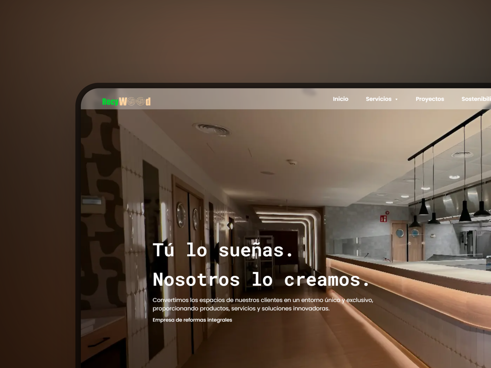

Empresa de reformas
Diseño, desarrollo e implementación de un sitio web corporativo para una empresa de reformas integrales, orientado a mejorar su presencia digital y facilitar la comunicación con potenciales clientes.
Se prestó especial atención a la estructura del contenido, la usabilidad y la adaptación a distintos dispositivos.
- HTML5
- CSS3
- JavaScript
- Photoshop
- Illustrator